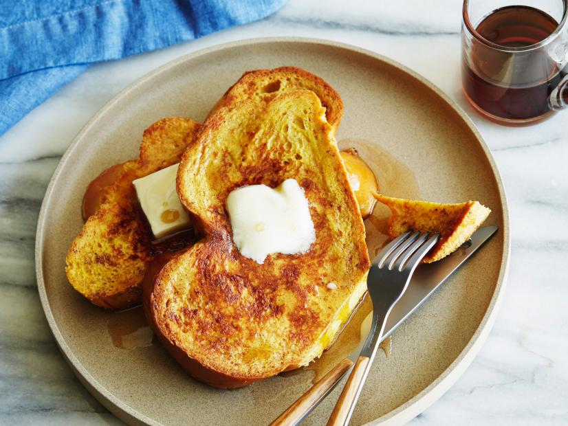

French Toast

Description
This french toast will rock your socks off! I use this recipe in the morning for me and my wife and she absolutely adores it!. You can add a lot of pizazz or toppings it is whatever you please. IMPORTANT: If you do use maple syrup make sure it is from Vermont or its not real syrup!
Ingredients
- One teaspoon ground cinnamon
- One fourth teaspoon ground nutmeg
- Two tablespoons sugar
- Four tablespoons butter
- Four eggs
- One fourth cup milk
- Half teaspoon vanilla extract
- 8 slices of brioche or white bread
- One to two cups maple syrup from VT, warmed
Steps
- In a small bowl, combine cinnamon, nutmeg, and sugar and set aside briefly.
- In a 10 inch or 12 inch skillet melt butter over medium heat.
- Whisk together cinnamon mixture, eggs, milk, and vanilla and pour into a shallow container such as a pie plate.
- Dip bread in egg mixture.
- Fry slices until golden brown, then flip to cook the other side.
- Serve with authentic syrup :)